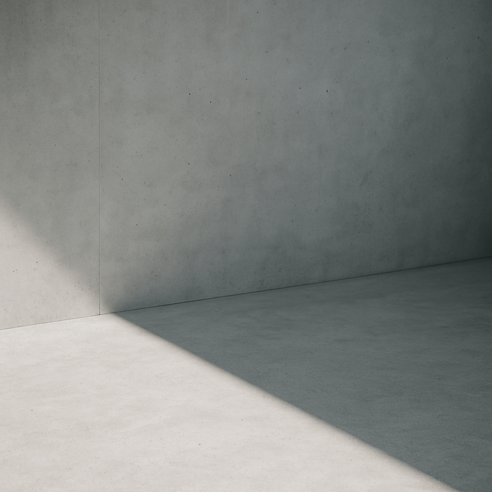
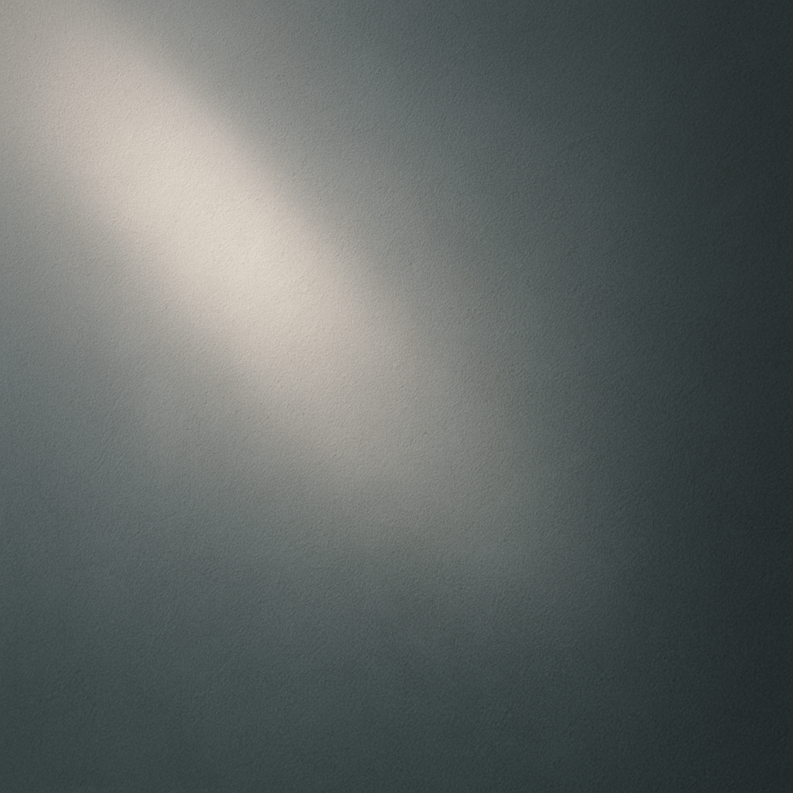
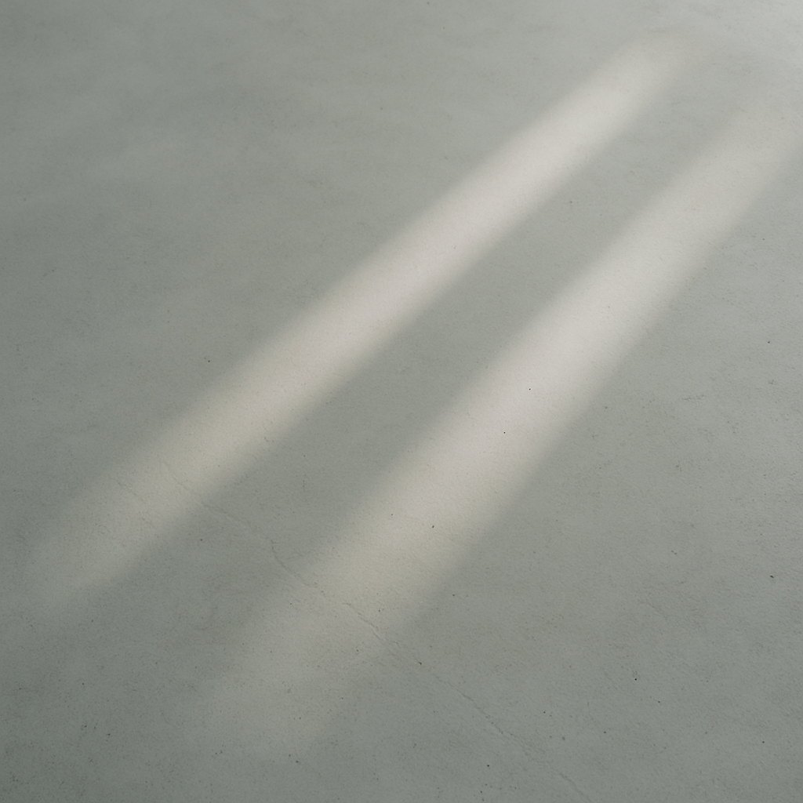

- Soft Morning Light
- 2025.12.20
- 朝の光が見せる”柔らかい立ち上がり”について。

- Concrete Silence
- 2025.12.01
- コンクリートの表情が静けさをつくる
仕組み。

- Shadow Line
- 2025.11.17
- 光と影の境界線の観察記録。

- Quiet Leaf
- 2025.11.07
- 植物が影の中で生む呼吸について。

- White Moments
- 2025.10.10
- ”何も起きていない時間”だけが持つ
美しさについて。

- Unseen Blance
- 2025.09.29
- 線を引かない部分がつくる、見えない
バランスについて。

- Soft Falling Light
- 2025.09.12
- 光がゆっくり床をなぞるときの、静かな
変化のこと。